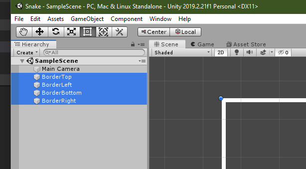
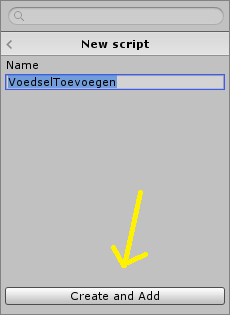
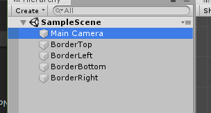

Deze snake werkbeschrijving komt heb ik niet helemaal zelf bedacht maar via een ander site op internet gevonden. Daar is hij alleen in het engels dus ik heb geprobeerd hem te vertalen.
Snake is een op zich een simpel spelletje, maar het is nog best ingewikkeld om te maken. Naast als je programmeer ervaring van de vorige opdrachten zal je hier ook met een nieuw programma aan de slag gaan, namelijk Unity. Unity is een programma waarmee spelletjes gemaakt kunnen worden voor de Computer, maar ook voor de PS4, Switch, Telefoon, Tablet etc. Het is dus een heel uitgebreid programma waar heel veel dingen ingesteld kunnen worden.
Omdat het best lastig is om een Unity project aan te maken, heb ik alvast een basis project aangemaakt voor een 2D spel. Ook zijn alle plaatjes die je nodig hebt ook al toegevoegd.
Laten we beginnen met het project te openen. Zoek in het Startmenu van Windows naar 'Unity Hub'.
Klik in het venster wat nu in beeld staat op 'Add' (toevoegen).
Zoek de map C\Leren-Programmeren\Snake\ en kies voor 'Select Folder'.
Klik in het projecten scherm nu op het zojuist toegevoegde project 'Snake'.
Als het goed is opent nu het volgende scherm van Unity:
In het Unity scherm zijn een aantal dingen belangrijk:
Letop: Als bij jou 'SampleScene' niet in het project menu (1) staat, dan is er iets niet goed gegaan. Je kan dan de 'SampleScene' vinden in venster 3 onder Assets. En die kan je slepen in venster 1.
Als eerste gaan we de randen van het spel maken. Daarvoor zijn er twee 'assets' (die plaatjes in vakje 3).
Selecteer eerst de horizontale lijn in het 'Assets' venster (3).
Als het goed is zie je nu in het eigenschappen venster (4) dat je een heleboel kan instellen.
Zorg ervoor dat de instelling hetzelfde zijn als op onderstaand plaatje en druk dan op 'Apply':
Belangrijkste wijziging is de 'Pixel Per Unit'. Omdat de snake ook 1x1 pixel gaat zijn willen we dat elke afstand in het spel ook per 1 pixel gaat. We zullen daarom bij alle assets dit op 1 willen zetten.
Selecteer nu de verticale lijn in het 'Assets' venster.
Ook hiervoor zetten we de eigenschappen hetzelfde als bij de horizontale lijn en klik weer op 'Apply':
Nu kunnen we de lijnen in het spel slepen. Sleep daarom de horizonale en verticale lijn allebei 2 keer in het spel venser (5). Als de lijn heel groot lijkt, dan kan je uitzoomen met de scroll van de muis te draaien in het spel venster. Je kan ze alvast een beetje goed zetten, maar let daar nog niet te veel op, dat gaan we zo aanpassen.
Als je de lijnen in het spel hebt gezet dan kan je ze daarna nog verslepen. Je moet dan alleen even vastpakken bij het middelste rondje als je een lijst geselecteerd hebt.
Als ze ongeveer zo staan zoals in het plaatje is het prima voor nu.
Als je een lijn selecteert dan zie je in het 'Scene' venster (1) dat deze grijs (geselecteerd) wordt. We gaan nu even handige namen geven aan de lijntjes.
Nu kan jij ze iets anders hebben staan dan mij. Maar als je de linker verticale lijn selecteert, hernoem hem dan in het scene venster naar 'BorderLeft'.
Het hernoemen kan je doen door in het scene venster op 'F2' te klikken of door in het eigenschappen venster de naam te wijzigen:
Doe dit voor alle lijntjes. Hernoem de lijntjes alsvolgt:
Om de lijnen op de juist plek te krijgen kan je ze één voor één aan klikken en de 'Position' aanpassen in het eigenschappen venster. Gebruik de volgende getallen voor de lijnen:

Tijd om een keertje op te slaan. Dus ga naar het menu en klik op 'Save' en doe dit nog een keer en klik op 'Save Project'.
Als het goed is zie je nu de randen van het spel voor 'Snake'. Er is alleen één probleem. Hoewel deze randen er uitzien als de randen van het spel weet het spel zelf nog niet dat het echte randen zijn. We willen natuurlijk zorgen dat Snake straks niet door de rand heen kan gaan. Daarom moeten we ze onderdeel maken van de 'echte' wereld in het spel.
Om dit voor elkaar te krijgen selecteren we eerst in het scene venster alle 4 de borders.

Op dit moment zijn voor het spel de randen dus alleen maar plaatjes, maar dat kunnen we aanpassen door in het eigenschappen venster op 'Add Component' te klikken.
Nu open een ander venstertje en daarin selecteer je eerst 'Physics 2D' en daarna 'Box Collider 2D'. Als het goed is wordt daarna die toegevoegd aan de eigenschappen van al je randen.
Zo.. de randen zijn nu gemaakt. En dan zonder dat je nog maar één regel code hebt geschreven. Die code komt straks echt nog wel ;-).
De bedoeling van Snake is om zoveel mogelijk eten te eten en daardoor te groeien. Laten we daarom eerst gaan maken dat er op willekeurige plaatsen eten tevoorschijn komt.
Voor het eten is al een 'assets' (een plaatje in vakje 3).
Dit plaatje is niets meer dan een gekleurde pixel. Maar dat is voor nu voldoende ;-).
Klik 'food' aan in het assets vak (3). En zorg dat de eigenschappen goed staan zoals hier, en druk daarna op 'Apply':
Nu kunnen we het voedsel in het spel slepen. Dat doe je door gewoon het 'food' icoontje met je muis naar het speelveld te slepen.
Net zoals met de rande van het spel moet Snake weten dat hij voedsel aanraakt. Daarom moeten we net als bij de randen een Collider toevoegen via de eigenschappen. Zorg daarom dat het eten in het spel geselecteerd is en klik in het eigenschappen venster vervolgens op Add Component' -> Physics 2D -> Box Collider 2D.

Bij de randen van het spel hoefte je niks te selecteren in het venster van de Box Collider, maar bij het eten moet je klikken op Is Trigger.
Even wat achtergrond:
In een spel zijn allemaal GameObjecten. En een GameObject zonder een Box Collider is gewoon een plaatje wat niks doet in het spel. Wanneer je wilt dat het wel wat doet in het spel dan moet je een Box Collider toevoegen (wat we nu 2x gedaan hebben). Door het toevoegen van de Box Collider wordt straks automatisch een functie (OnCollissionEnter2D) aangeroepen in de code wanneer een ander GameObject er tegenaan komt.
Bij eten willen we niet dat Snake tegen het eten aanbotst, maar dat hij er gewoon doorheen gaat. Maar we willen wel weten als hij eten gegeten heeft. Daarom hebben we wel een Box Collider nodig, maar door de Is Trigger aan te zetten geven we aan dat de GameObjecten niet botsen, maar dat wel de functie (OnCollissionEnter2D) aangeroepen worden als ze overelkaar heen gaan.
Omdat we niet willen dat er gelijk in het begin van een spel eten klaar ligt moeten we een Prefab maken. Dat kan je zien als een stukje spel wat we alvast gemaakt hebben met alle goede instellingen. Zo'n Prefab kunnen we via code straks toevoegen aan het spel.
We gaan nu van het eten een Prefab maken door eerst de naam te wijzigen naar FoodPrefab. Weet je nog hoe dat moet? Klik in het scene venster (1) food aan en wijzig in het eigenschappen venster de naam dus naar FoodPrefab.

Sleep daarna de FoodPrefab vanuit het scene venster naar het Assets venster (3).
Als dat gelukt is dan moet je nu uit het scene venster de FoodPrefab verwijderen. Hierdoor is hij nu niet meer standaard in het spel.
Belangrijk: Sla wat je gedaan weer op zoals ik eerder heb laten zien.
Eindelijk kan je weer wat gaan programmeren ;-). We gaan nu een script maken waarmee het eten op willekeurige plekken in het spel tevoorschijn komt.
Omdat dit script altijd er moet zijn voegen we het toe aan iets anders wat er altijd is, namelijk de 'Main Camera'. Klik daarom op de 'Main Camera'. In het eigenschappen venster klik je vervolgens op Add Component -> New Script.

En noem het script 'VoedselToevoegen' en klik op 'Create and Add'.

Nu is in het 'Assets' venster (3) het script toegevoegd.
Dubbel klik op dit script en hierdoor zal Visual Studio vanzelf openen.
In Visual Studio zie je als het goed is nu het 'VoedselToevoegen' class staan met de volgende inhoud:
using System.Collections;
using System.Collections.Generic;
using UnityEngine;
public class VoedselToevoegen : MonoBehaviour
{
// Start is called before the first frame update
void Start()
{
}
// Update is called once per frame
void Update()
{
}
}Je ziet hier 2 functies staan. Start() wordt aangeroepen bij het starten van het spel en Update() wordt de hele tijd aangeroepen tijdens het spel. Voor nu hebben we de Update() functie niet nodig dus die kan je verwijderen.
using System.Collections;
using System.Collections.Generic;
using UnityEngine;
public class VoedselToevoegen : MonoBehaviour
{
// Start is called before the first frame update
void Start()
{
}
}We moeten nu een variabele aanmaken voor het eten wat we willen gaan maken in het spel. Daarvoor voegen we een GameObject class toe en noemen die foodPrefab. Straks in Unity (waar we het spel in maken) kunnen we deze variabele aan het echte eten koppelen.
public class VoedselToevoegen : MonoBehaviour
{
// Voor het eten
public GameObject foodPrefab;
// Start is called before the first frame update
void Start()
{
}
}Een GameObject is een heel object waar we van alles mee kunnen doen. Één van de dingen die een GameObject heeft is een Transform, dat is een ander object wat de positie bijhoudt van het GameObject.
Je kan dit een beetje vergelijke met het Huis uit opdracht 3 die een Hond kan hebben
Omdat we willen dat het eten binnen de randen gemaakt wordt moeten we weten waar de randen zijn in het spel. Daarom hebben we variabele nodig voor elke rand die in het spel zit. Nu zouden we daar ook GameObject voor kunnen gebruiken, maar omdat we alleen de positie willen weten gebruiker we hiervoor dus de class Transform. Straks in Unity kunnen we deze variabelen koppelen met de echte randen in het spel.
public class VoedselToevoegen : MonoBehaviour
{
// Voor het eten
public GameObject foodPrefab;
// De randen van het spel
public Transform borderTop;
public Transform borderBottom;
public Transform borderLeft;
public Transform borderRight;
// Start is called before the first frame update
void Start()
{
}
}Nu moeten we een functie maken die op een willekeurige plek (binnen de randen) eten aanmaakt. Hiervoor moeten we de positie in X en Y bepalen in het spel. X is horizontaal en Y is verticaal. Maak daarvoor een nieuwe functie EtenMaken() aan. Met de volgende code:
public class VoedselToevoegen : MonoBehaviour
{
...
void EtenMaken()
{
// Positie van links en rechts
var linkerRandX = borderLeft.position.x;
var rechterRandX = borderRight.position.x;
// Willekeurige positie tussen links en rechts
var etenX = (int)Random.Range(linkerRandX, rechterRandX);
// Positie van boven en onder
var bovenRandY = borderTop.position.y;
var onderRandY = borderBottom.position.y;
// Willekeurige positie tussen boven en onder
var etenY = (int)Random.Range(bovenRandY, onderRandY);
}
}Random.Range() is een functie wat een willekeurig getal kan berekenen tussen twee andere getallen.
Nu weten we een positie voor het eten, maar moeten we het eten zelf ook nog aanmaken in het spel. Dat doen we door de functie Instantiate() aan te roepen (engels voor 'Aanmaken').
public class VoedselToevoegen : MonoBehaviour
{
...
void EtenMaken()
{
// Positie van links en rechts
var linkerRandX = borderLeft.position.x;
var rechterRandX = borderRight.position.x;
// Willekeurige positie tussen links en rechts
var etenX = (int)Random.Range(linkerRandX, rechterRandX);
// Positie van boven en onder
var bovenRandY = borderTop.position.y;
var onderRandY = borderBottom.position.y;
// Willekeurige positie tussen boven en onder
var etenY = (int)Random.Range(bovenRandY, onderRandY);
// Aanmaken eten
Instantiate(foodPrefab, new Vector2(etenX, etenY), Quaternion.identity);
}
}Vector2() is een object waarmee je de positie kan aangeven. Wat een 'Quarternion' is laten we even zitten.
Nu moeten we nog zorgen dat de EtenMaken() functie wordt aangeroepen. Dit kunnen we doen door in de Start() functie een tijdklok te maken die elke keer de EtenMaken() functie aanroept.
void Start()
{
InvokeRepeating(nameof(EtenMaken), 3, 4);
}De InvokeRepeating() functie roept de functie aan die we mee geven (In dit geval dus EtenMaken) na 3 seconden aan. En daarna elke keer na 4 seconden. Sla het script in Visual Studio op door via het menu te kiezen voor 'Save' of via het 'Save icoontje' boven in beeld.
Het volledige script ziet er nu zo uit:
public class VoedselToevoegen : MonoBehaviour
{
// Voor het eten
public GameObject foodPrefab;
// De randen van het spel
public Transform borderTop;
public Transform borderBottom;
public Transform borderLeft;
public Transform borderRight;
// Start is called before the first frame update
void Start()
{
InvokeRepeating(nameof(EtenMaken), 3, 4);
}
void EtenMaken()
{
// Positie van links en rechts
var linkerRandX = borderLeft.position.x;
var rechterRandX = borderRight.position.x;
// Willekeurige positie tussen links en rechts
var etenX = (int)Random.Range(linkerRandX, rechterRandX);
// Positie van boven en onder
var bovenRandY = borderTop.position.y;
var onderRandY = borderBottom.position.y;
// Willekeurige positie tussen boven en onder
var etenY = (int)Random.Range(bovenRandY, onderRandY);
// Aanmaken eten
Instantiate(foodPrefab, new Vector2(etenX, etenY), Quaternion.identity);
}
}Ga weer terug naar het Unity programma (die staat als het goed is nog ergens open). En klik op de 'Main Camera' in het scene venster.

Als je nu kijkt in het eigenschappen venster zie je daar het script staan met de variabele die we hadden aangemaakt. Alleen daarachter staat nog 'None'.
Als het niet lukt met slepen kan je ook klikken op het kleine rondje achter de variabele. Dan opent een venster waar je kan kiezen wat er in moet komen.
Belangrijk: Sla je project weer even op zoals we eerder hebben gedaan.
Nu willen we natuurlijk uittesten of het gaat werken. Dus klik nu maar eens op de 'Play' knop boven in beeld: .
Als het goed is zie je nu je spel starten en als je even wacht zouden er vanzelf eten stukjes tevoorschijn moeten komen.
.
Als het goed is zie je nu je spel starten en als je even wacht zouden er vanzelf eten stukjes tevoorschijn moeten komen.
Gelukt? Jippie...:tada: